Unit 1 · Working memory and saved files
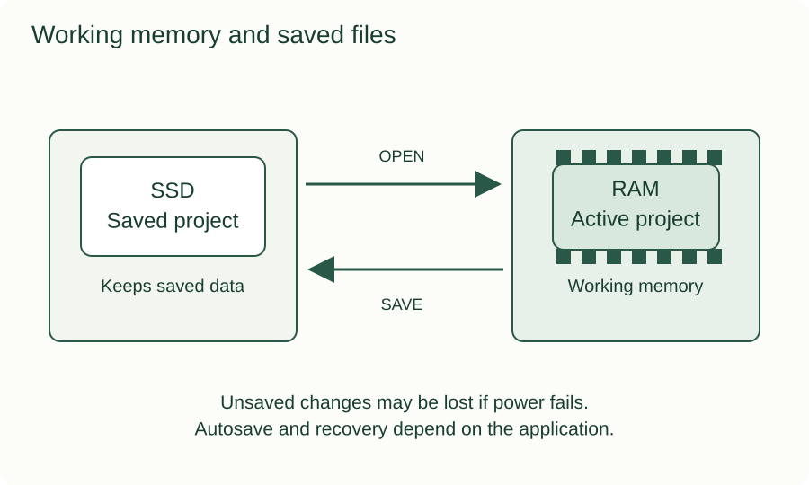
Open a scalable image or download it for a lesson. These original diagrams explain selected concepts from all four units. Read the related chapter for the full explanation and limits of each model. See the textbook About page for reuse terms.
Browse 48 more visual concept demonstrations →

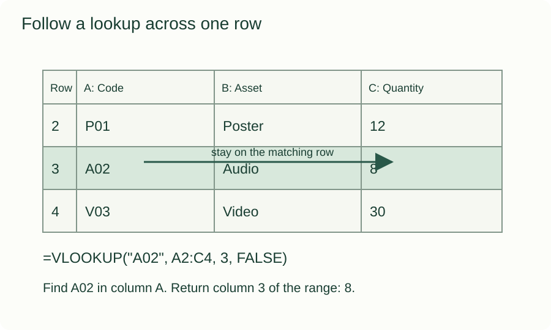
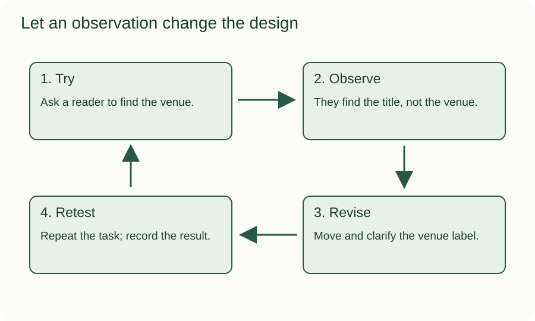
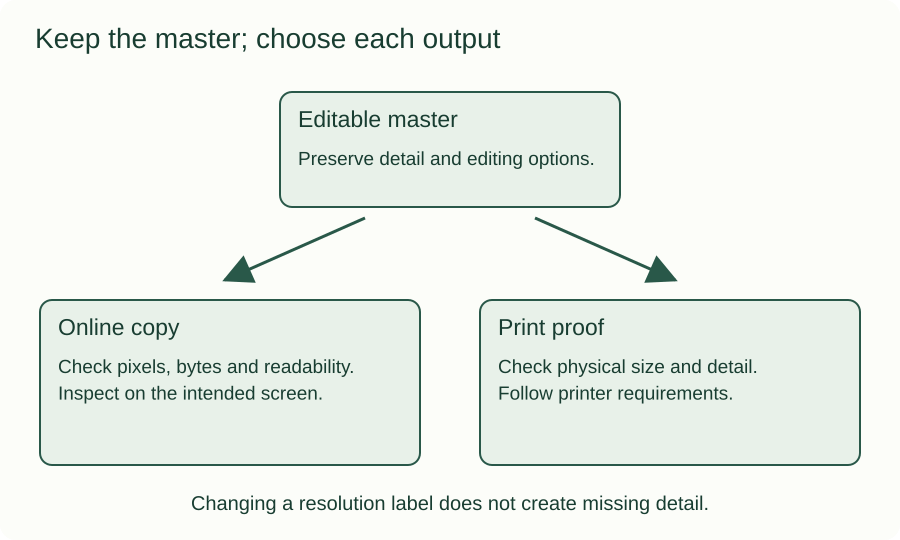
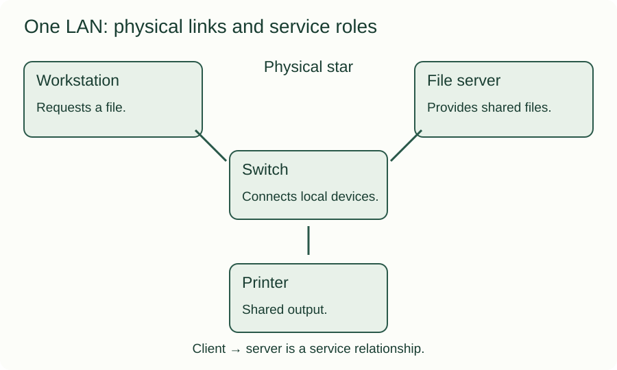
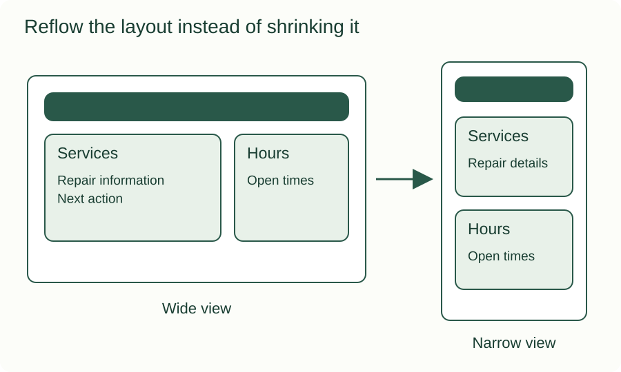
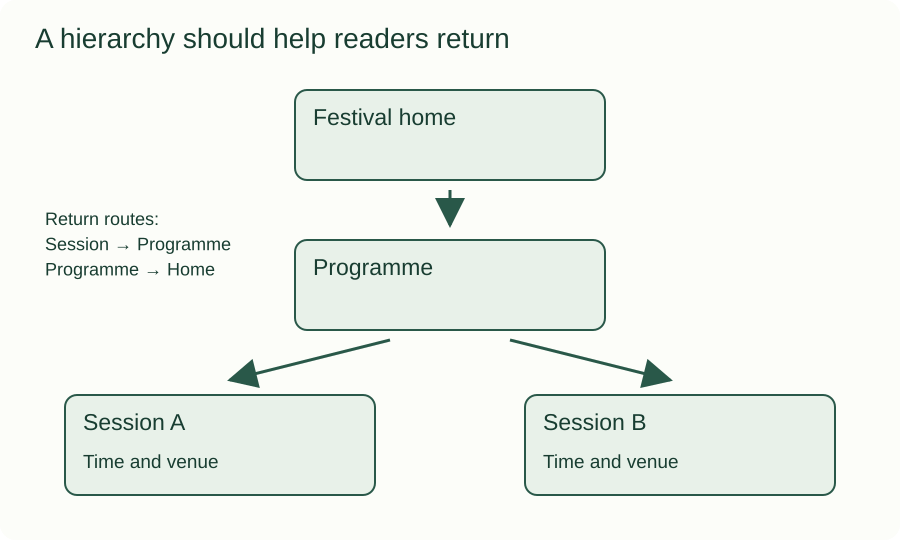
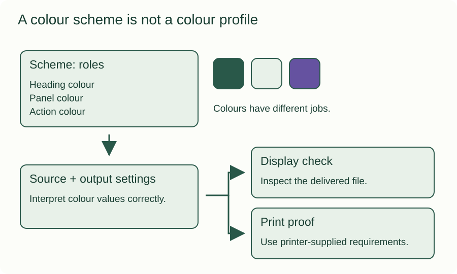
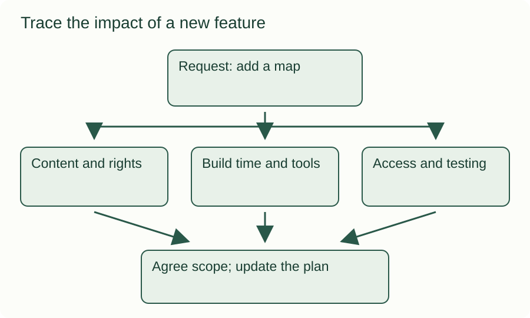
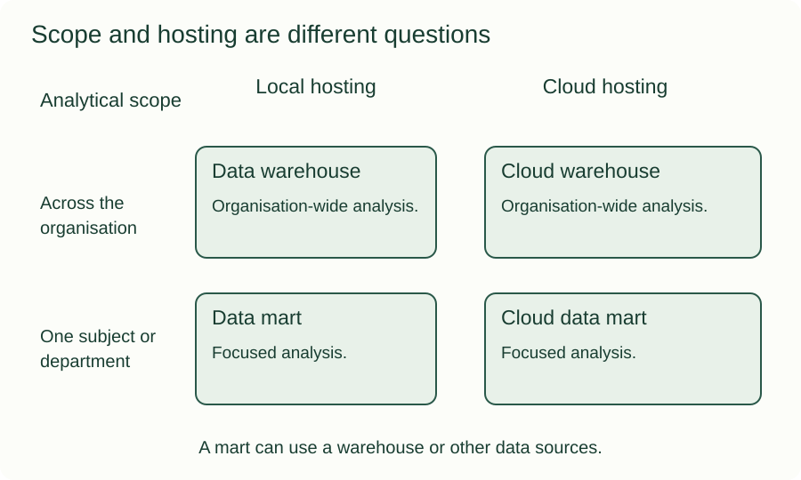
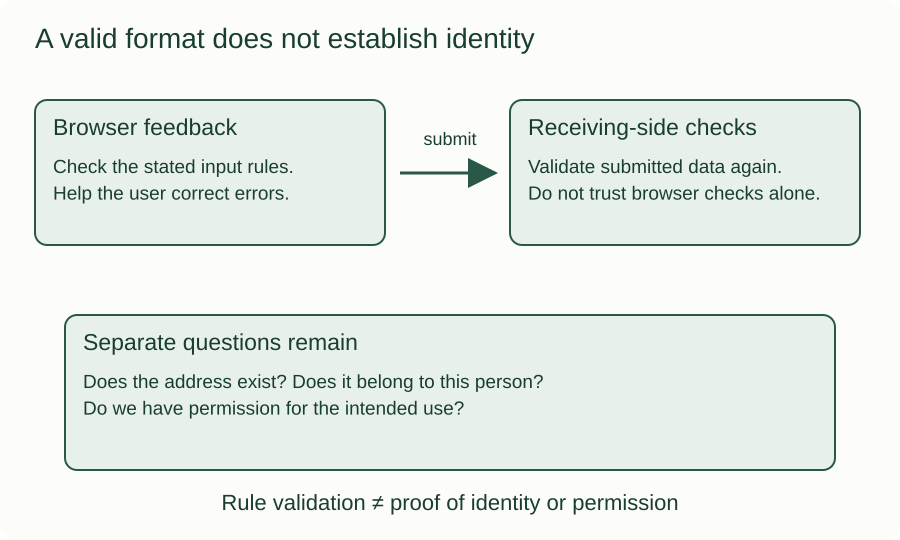
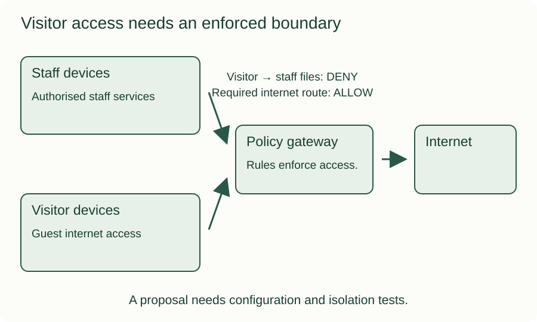